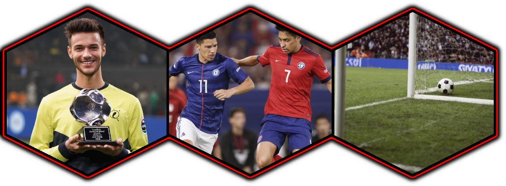

Mapa Kolejki
Poniżej znajduje się przegląd kolejki! Dowiedz się o zawodniku kolejki, o tym jak wyglądał mecz kolejki lub obejrzyj nalepszego gola kolejki. Aby przejść do nich, wystarczy kliknąć na odpowiedni obrazek!

 PitchPulse
PitchPulsePoniżej znajduje się przegląd kolejki! Dowiedz się o zawodniku kolejki, o tym jak wyglądał mecz kolejki lub obejrzyj nalepszego gola kolejki. Aby przejść do nich, wystarczy kliknąć na odpowiedni obrazek!